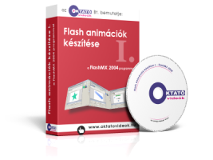

Flash animációk készítése
Ebben az oktató anyagban a Flash animációk készítéséhez a legnépszerűbb szerkesztőprogramot, a Macromedia FlashMX 2004-es változatát használjuk.
Ezzel a programmal már összetett és tetszetős is animációkat készíthetünk. Az előadássorozat végén az ActionScript nyelvvel is megismerkedünk.
Az előadások címei:
- Ismerkedés a kezelőfelülettel
- Rajzok készítése
- Műveletek szövegekkel
- Frame-by-frame animáció készítése
- Mozgásátmenet-típusú animációk
- Alakátmenet-típusú animációk
- Útvonalkövető animációk készítése
- Képek használata az animációban
- A maszk-rétegek használata
- Hangok, zenék és videók beillesztése
- Grafikus szimbólumok
- Moziklip-típusú szimbólumok
- Gomb típusú szimbólumok
- ActionScript alapfokon